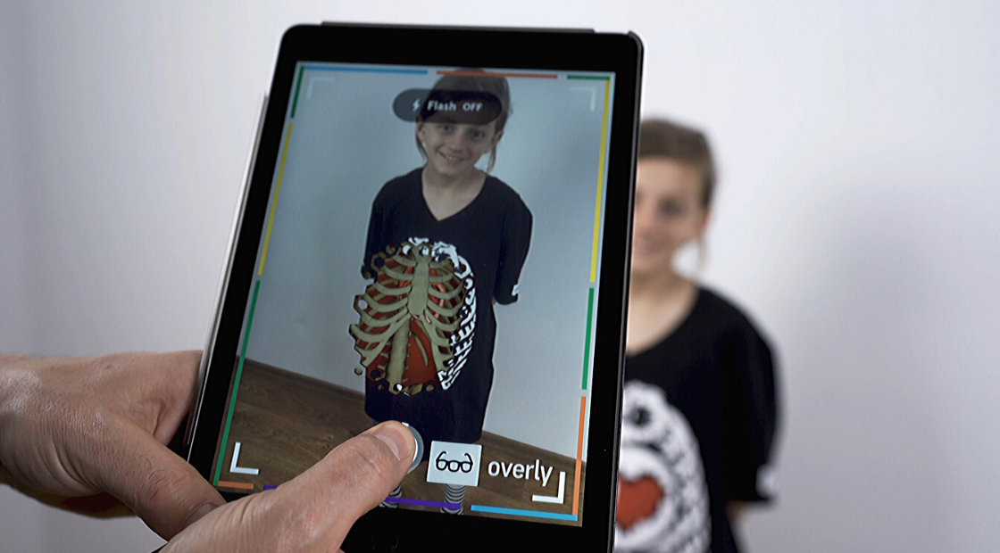
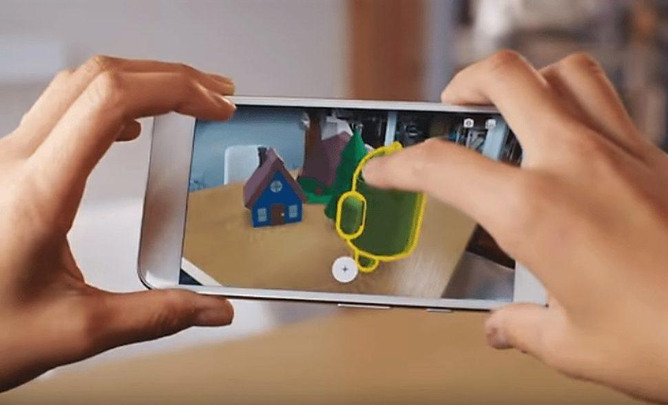
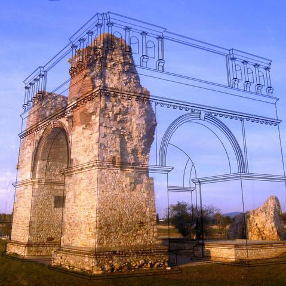
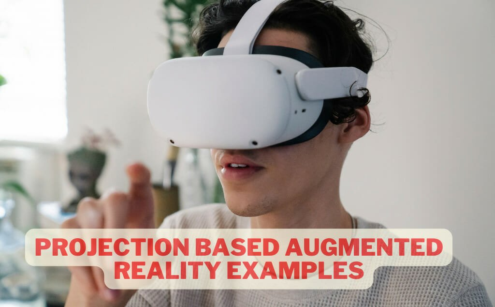

WELCOME TO OUR AR PROJECT

Augmented Reality (AR) is a technology that overlays digital information and images onto the real world
KEY FEATURES OF AR:

Overlays digital content onto real-world environment.
Uses camera ,sensors,and display to merge physical and virtual.
Enhances user experience with interactive and immersive content.
Can be experienced through various devices (smartphone,tablets,smart glasses,head-mounted displays).
TYPES OF AR:
1. Marker-based AR: Uses images or QR codes to trigger AR experiences:
2. Markerless AR: Uses location ,GPS,and sensors to provide AR experiences:
3. Superimposition-based AR: Overlays digital information onto real-world objects:
4. projection based AR: projects digital information surfaces:
5. Mixed reality(MR): Merges AR and virtual reality (VR) technologies: